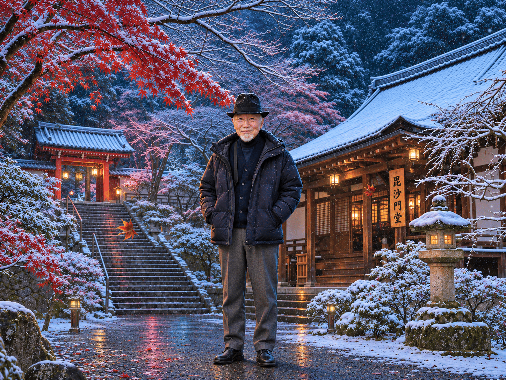
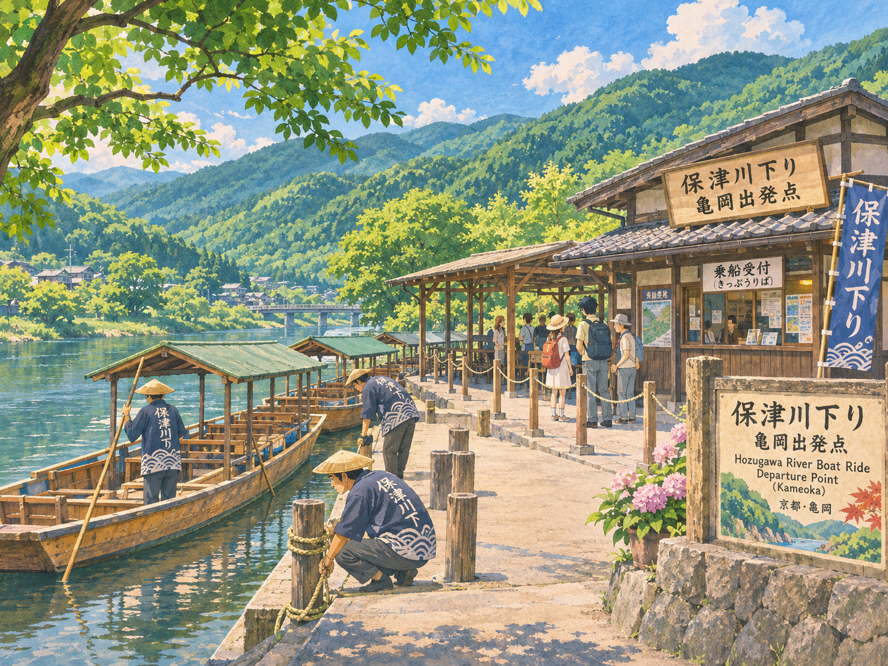

LIFE STORY / 人生の履歴書
廣瀬さん
温かなまなざしと、
揺るがない心で。
地域に尽くし、人に寄り添い続けてこられた歩みを、友人のまなざしから綴ります。

01
ROOTS
ふるさとに流れる
歴史と風景
廣瀬さんが生まれ育たれたのは、亀岡市八木。周辺には園部城があり、亀岡には嵐山へと向かう船旅、保津川下りの出発点があります。
この地には、本能寺の乱を起こした明智光秀にまつわる逸話も残っています。歴史と自然が身近に感じられるふるさとです。

園部城と保津川下りは、風景をもとにしたイメージ画です。
02
WORK & COMMUNITY
地域に尽くし、
人を支える
京都市の信販会社で、取締役融資本部長を務められた廣瀬さん。地域に大いに貢献されてきた方です。
退職後も、NPO法人「ホームロイヤー」を設立。弁護士事務所と協力しながら、多重債務に悩む方々の相談に耳を傾け、その解決に向けて努力を続けておられました。
03
A STEADFAST HEART
温厚な人柄の奥にある、
強いもの
昭和のバブル経済崩壊後にお付き合いが始まり、30年以上が過ぎました。長い年月を通して、私は廣瀬さんを、とても温厚な方だと感じています。
年齢を重ねて仕事を辞められた後も、さまざまな相談に乗り、助言を続けておられました。穏やかさの内に、人を支えようとする強いものをお持ちの方だと、私は思っています。
人に寄り添う温かさと、
歩みを支える芯の強さ。
そのお姿は、長いお付き合いの中で、今も心に残っています。